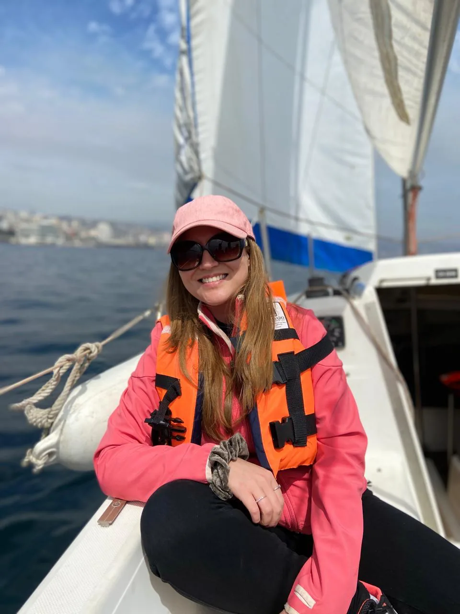
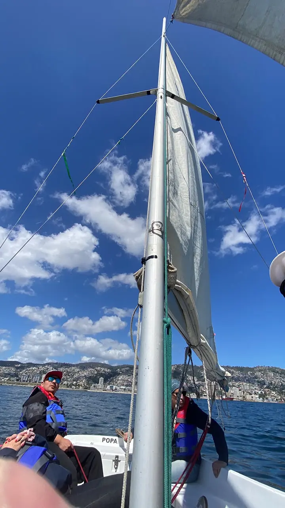
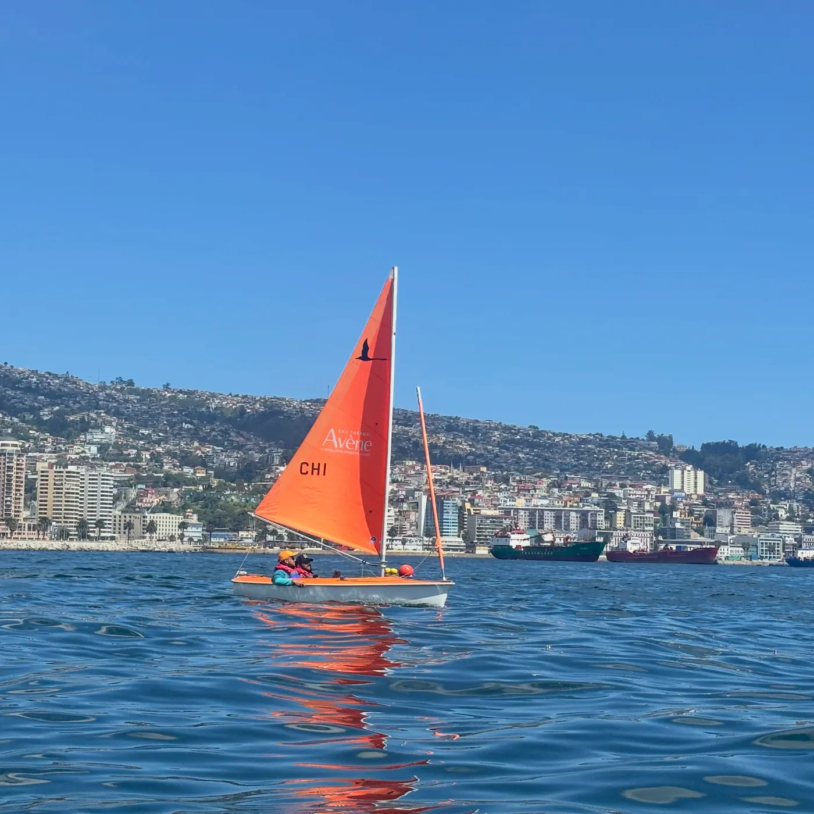
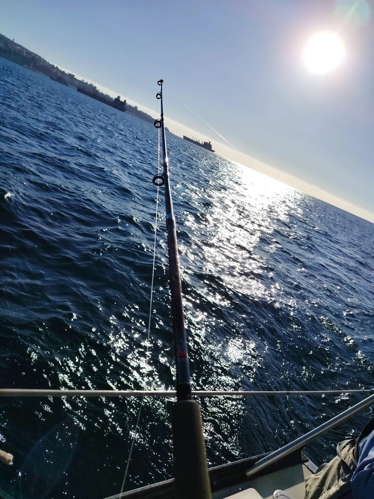
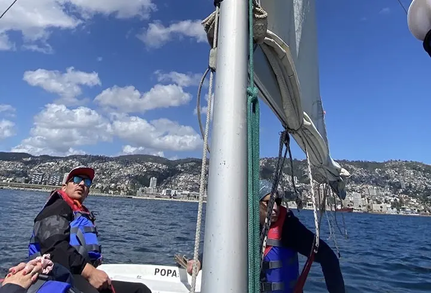
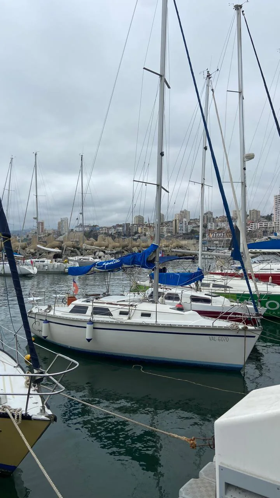
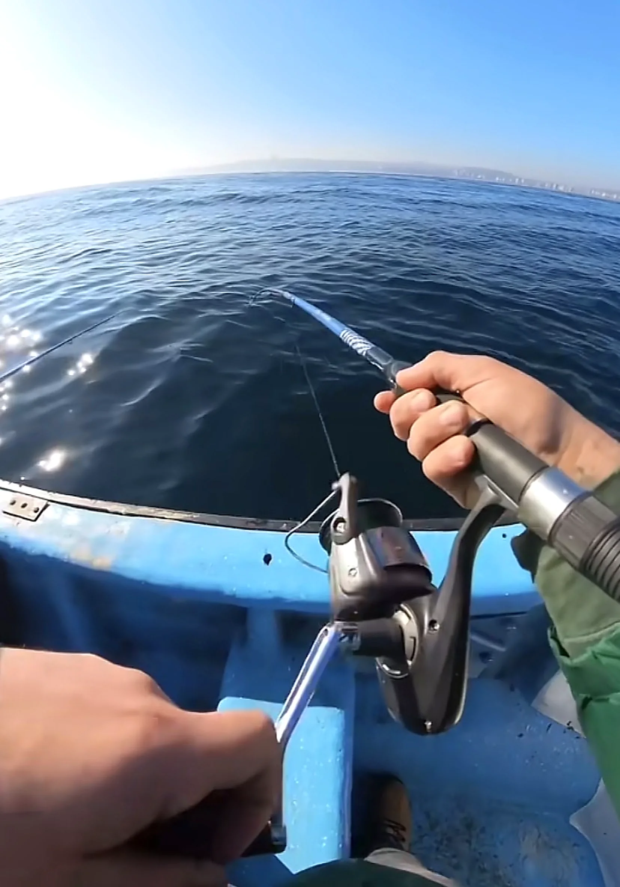

Paseos en velero.
Disfruta el paisaje costero desde el mar con familia, amigos o en pareja.
Ver paseos
El mar se vive en primera persona.
Sal a navegar en velero por la bahía con skipper a bordo. Aprende a maniobrar en sesiones de práctica privadas, o pasa una jornada de pesca en alta mar. Tú eliges la experiencia y nosotros te guiamos en la aventura.
La filosofía
El viento marca el rumbo.
La experiencia es tuya.
En Valpo a Vela te invitamos a descubrir el mar de una forma cercana y participativa. Cada salida es una oportunidad para aprender, practicar o simplemente disfrutar.

Disfruta el paisaje costero desde el mar con familia, amigos o en pareja.
Ver paseos
Participa en las maniobras y entiende el viento. Hasta 4 personas + instructor.
Ver la clase
Una embarcación de iniciación pensada para facilitar la participación a bordo.
Ver la experiencia

¿Ya tienes licencia? Gana confianza gobernando, con acompañamiento.
Consultar prácticaConoce el Capella
El Capella es un velero monocasco de crucero de 1990, con una distribución muy acogedora: salón con mesa central, cocina de dos quemadores, WC marino y espacios de descanso en proa y popa.





Actividades
Disfruta el paisaje desde el agua, aprende a navegar desde cero, descubre una embarcación accesible o pesca una jornada completa.
Disfruta el paisaje costero desde el mar en una salida recreativa, ideal para compartir con familia, amigos o en pareja. Una experiencia para relajarse, conversar y contemplar Valparaíso desde otra perspectiva.

Descubre los fundamentos de la navegación a vela participando en las maniobras, comprendiendo el viento y conociendo el funcionamiento de la embarcación. Una experiencia práctica para dar tus primeros pasos en el mar.
Acércate a la navegación en una embarcación de iniciación diseñada para facilitar la participación a bordo. Con un instructor y un participante, conocerás las nociones básicas de navegación, las principales maniobras y el funcionamiento de un velero. Una experiencia personalizada, con especial atención a la accesibilidad.
Vive una jornada en el mar enfocada en la pesca: una salida deportiva, centrada en la experiencia y la técnica, o una jornada recreativa para disfrutar de la actividad y del entorno marino. Modalidad y condiciones se coordinan previamente.

Coordinamos prácticas asistidas para que ganes confianza gobernando. Cuéntanos tu nivel y qué embarcación buscas.
Consultar práctica asistidaEmbarcaciones disponibles
Las embarcaciones que usamos en Valpo a Vela para la formación y la navegación recreativa en la bahía de Valparaíso.
Embarcación de mayor eslora para travesías personalizadas y paseos costeros, con comodidad y seguridad. Conoce el Capella.
Embarcación abierta de vela ligera, excelente para clases prácticas: se participa activamente en las maniobras y el gobierno.
Embarcación de iniciación con gran estabilidad, excelente respuesta y control asistido, pensada para facilitar la participación a bordo.
Bote adaptado para jornadas de pesca deportiva y recreativa en la bahía, equipado para una experiencia óptima y segura.
Planifica tu salida
Consulta el mapa del viento antes de tu salida. Antes de zarpar, confirmamos siempre las condiciones reales en la bahía.
Arrastra el indicador de ubicación para ver el pronóstico detallado de viento y temperatura en tu zona. Abrir en Windy
Antes de embarcar
Encuéntranos en el punto de zarpe y consulta la zona y el horario de navegación.
Si tienes otra duda, escríbenos y conversamos.
No necesariamente. Podemos orientarte sobre opciones para principiantes. Antes de reservar, consulta el nivel requerido y el tipo de embarcación de cada actividad.
El valor depende de la actividad, la duración y la cantidad de personas. Escríbenos con esos datos y te enviamos la cotización por WhatsApp.
Escríbenos para consultar fechas, duración, precio, zarpe desde Muelle Barón, embarcación y condiciones meteorológicas de la bahía de Valparaíso. La salida se confirma una vez acordados esos detalles.
Zarpamos desde Muelle Barón, Valparaíso. Atendemos de martes a domingo, de 11:00 a 17:00 hrs.
Escríbenos con tus fechas preferidas. Mientras antes nos contactes, más opciones de horario y de embarcación tendrás.
Depende del clima y de la actividad. Como orientación, lleva ropa cómoda, protección solar y una muda o abrigo adecuado. Antes de cada salida recibirás indicaciones específicas.
Todas las actividades incluyen chalecos salvavidas. Si no sabes nadar o hay algo que debamos considerar, cuéntanoslo al coordinar para planificar la salida contigo.
Si van a participar menores de edad, indícanos sus edades al escribirnos. La participación se define según la actividad y la embarcación.
La navegación en velero Hansa está pensada para facilitar la participación a bordo y se personaliza con especial atención a la accesibilidad. Cuéntanos tus necesidades y buscamos la mejor opción.
La clase práctica de raquero tiene un máximo de cuatro participantes. Para paseos en veleros de mayor tamaño, la capacidad se confirma según la embarcación disponible.
La duración mínima es de dos horas: 15 minutos para armado e inducción, una hora y media de navegación práctica y 15 minutos para desarmar la embarcación.
Incluye chalecos salvavidas, apoyo de zodiac, acercamiento al bote, acompañamiento de profesor o instructor, guía y certificado. Consulta al coordinar la reserva cualquier requisito específico de la actividad.
Sí. Coordinamos prácticas acompañadas para navegantes con licencia que quieren ganar confianza gobernando. Cuéntanos tu nivel y la embarcación que buscas.
La salida depende de las condiciones meteorológicas y marítimas y de la evaluación del responsable de la actividad. Si las condiciones no permiten navegar con seguridad, coordinamos contigo una nueva fecha. La fecha y las condiciones se confirman antes de embarcar.
Hablemos de tu próxima salida
Escríbenos para consultar cursos de iniciación, prácticas acompañadas para navegantes con licencia y actividades recreativas. Coordinaremos contigo la zona, fechas, valores y embarcación disponible.